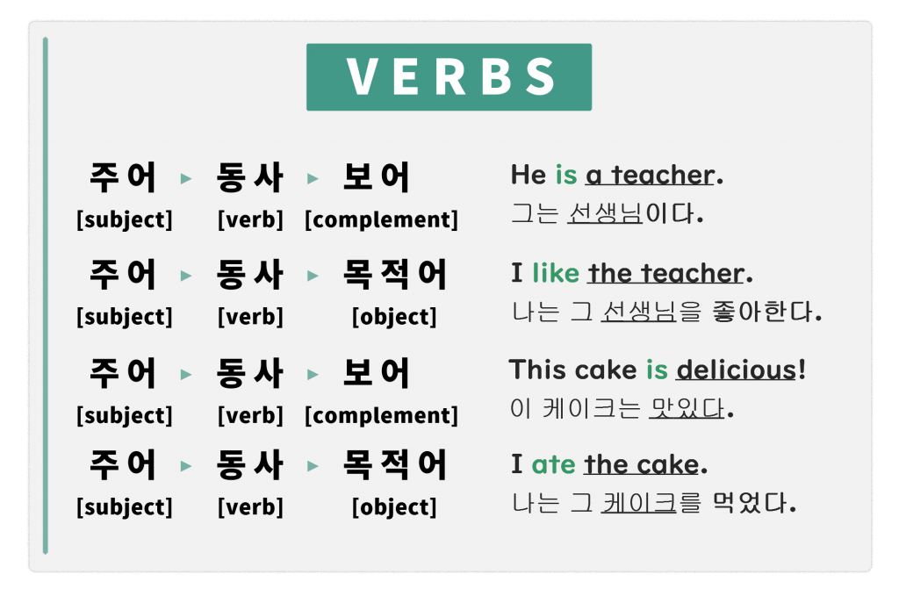

목차
- 영어란?
- 문장의 구성요소
- 문장의 형식
- 관용구
문장의 구성요소
주어 (Subject)
문장을 구성할 때는 주어를 문장의 시작 부분에 써야 한다. 주로 명사나 대명사가 주어 자리에 들어갈 수 있는데, 명사 상당 어구도 주어의 역할을 한다. 이런 동명사나, 구와 절이 주어로 사용될 때는 항상 단수 취급한다.
|
Subject
문장에서 주어는 4가지 역할을 한다
|
-
|
행동의 주체
My friend stuides japanese.
내 친구는 일본어를 공부해요
|
-
묘사의 대상
My friend is smart
내 친구는 똑똑해요.
|
-
확인의 대상
My friend is the tall guy
내 친구는 그 키가 큰 사람이에요.
|
-
행동의 대상
My friend got an aword.
내 친구는 상을 받았어요.
|
동사(verb)
"동사 [verb]"란 말은 주어의 동작이나 상태를 나타내며, 원형 (현재), 과거, 또는 분사 (현재분사, 과거분사)의 형태로 쓰이지만 모두 동사의 기능을 한다.
-
I have something to do. [현재형]
나는 해야 하는 일이 있다.
-
When do you go to school? [의문형]
너는 언제 학교에 가니?
-
Do not speak during class! [명령형]
수업 시간에 말하지 마!
-
I am going home now. [진행형]
나는 지근 집에 가는 중이다.
-
I have already spent my money. [완료형]
난 이미 돈을 다 썼다.
한국어는 동사가 문장의 맨 끝에 오므로 끝까지 읽어야 문장의 뜻을 이해할 수 있지만, 영어의 동사는 주어 바로 뒤에서 그 다음에 나오는 단어가 주어와 같은지 다른지 알려주는 역할을 한다.

그래서, 동사 바로 뒤에는 보어 [verb complement]가 오거나 목적어 [verb object]가 온다. 보어는 "to be 동사"와 같이 쓰이며 명사 혹은 형용사이며, 주어를 묘사하는 말이다
-
My friend is a singer.
내 친구는 가수다.
-
She is pretty.
그녀는 예쁘다.
목적어는 행동의 대상이다.
-
My friend sings songs.
내 친구는 노래를 부른다.
-
She studies English.
그녀는 영어를 공부한다.
보어와 목적어
보어는 주어 혹은 목적어 등의 상태를 묘사한다. 주어의 상태를 묘사할때는 "주격보어"", 목적어의 상태를 묘사할 때는 "목적격 보어"라고 하며 (대)명사나 형용사, 또는 그에 상당하는 어구가 보어로 쓰인다.
주격 보어 (Subject Complement)
-
My friend is an English teacher. [명사]
내 친구는 영어 선생님이다.
-
It's me! [대명사]
저예요!
-
He is handsome. [형용사]
그는 잘생겼다.
목적격 보어(Object Complement)
-
You will find English interesting. [형용사]
여러분은 영어가 재미있다는 것을 알게 될 것이다.
-
Traveling makes me happy. [형용사]
My experiences made me a good teacher. [명사]
내 많은 경험 때문에 나는 좋은 선생님이 되었다.
여행하는 것은 나를 행복하게 한다.
-
My experiences made me a good teacher. [명사]
내 많은 경험 때문에 나는 좋은 선생님이 되었다.
-
I saw him studying at the library. [어구]
나는 그가 도서관에서 공부하는 걸 보았다.
이와 같이 보어는 주어와 같은 맥락을 가지지만(동격), 목적어는 주어와 같은 맥락일 수가 없다.
목적어(Object)
-
I love our family.
나는 우리 가족을 사랑한다.
-
I like playing video games.
나는 비디오 게임을 하는 걸 좋아한다.
-
I often watch TV.
나는 TV를 자주 본다.
목적어는 행동의 대상이 되는 대상이다. 동사중에는 love, like, watch와 같이 목적어를 필요로 하는 동사가 있다. 이런 동사들이 올바른 의미를 가지기 위해서는 목적어가 필요한 데, 이러한 특성을 가진 동사들을 타동사라고 부른다. 이와반대로 목적어가 존재하지 않아도 의미를 가지는 동사를 자동사라 한다.